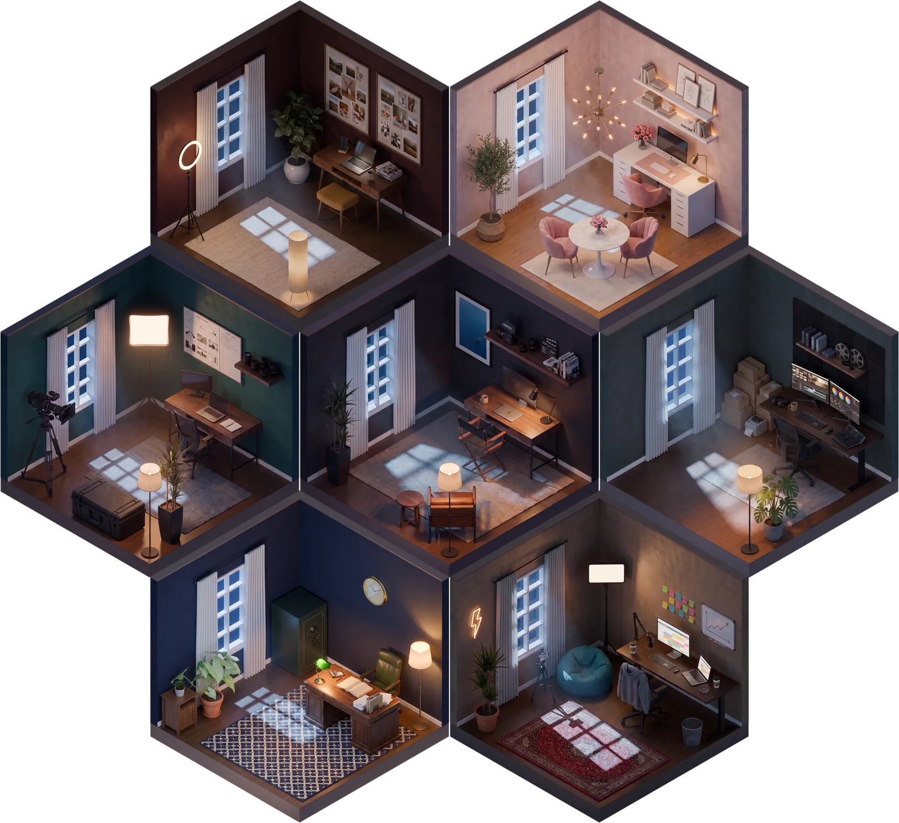

Featured
Empty Chair
Every dinar fills a seat. A campaign that keeps students in university, told through the seat they almost left empty.
Scene one. Take one.
Every film here starts the way it would on a set: a slate, a shot list and one director's call. The models are the crew. The frame is still made by hand.
01 The eye
The models changed what a small studio can make. They didn't change what makes a frame worth watching.
Where the light falls. What stays in shadow. How long to hold before the cut. Every one of those calls is still made by hand, and a whole studio is built to protect them.
02 The studio
Unmade Films runs as a studio of seven AI departments, each in its own room. They research, plan, track every shot and prepare every delivery, so the director's time goes where it matters: the frame.

Night in the studio. Hover a room to turn its lights on.
03 Work
Every dinar fills a seat. A campaign that keeps students in university, told through the seat they almost left empty.
Desert craft, from the first pencil line to stadium light.
Eighty years of independence, in the faces of Jordan.
Borz. The fighter as the wolf, in an illustrated world.
One bottle. Smoke, amber and stone.
From hand to hand. An olive oil film, grove to table.
One lit window in a dark city, and the person inside it.
04 Process
AI replaces the crew and the location, not the craft. Every film moves through the same six steps inside the studio.
You send the idea, the product and the deadline. The Director's room turns it into a treatment: story, references and a shot list, before anything is generated.
Every shot is designed like a real one. Lens, camera height, where the light comes from and what it falls on.
Shots are built one by one through the studio's own production pipeline. Every take is checked for light, continuity and detail, and only the ones that hold up move on, then they're upscaled for final delivery. That's how every film leaves the studio at the same high standard.
Performance, timing and continuity. Each take is pushed until it works inside the cut, not only on its own.
Cut, graded to one consistent look, scored and mixed in the Post room. This is where it becomes a film.
Masters in the formats you need: 16:9, 9:16 and 4:5, cutdowns and stills, ready for broadcast and social.
05 Services
Every project runs through the whole studio, from the first brief to the final master.
Brand films, product launches and TV spots, made without a shoot.
Cutdowns, vertical edits and stills from the same world, ready for every channel.
Concepts, treatments and pitch visuals for agencies who need to sell an idea first.
06 Submission
Fill it in the way you'd submit a project to a producer. A working title, a logline and when you need it is enough. It lands on the director's desk, and you'll get a reply within two working days with questions or a first idea.
dawood@unmadefilmsai.comAmman, Jordan · --:-- local time
FADE IN:
INT. UNMADE FILMS STUDIO, AMMAN · NIGHT
One lamp on. The last frame of the day holds on the monitor. The director turns from it and looks straight into the lens.
DAWOOD
(to camera)
Thanks for spending a little time with the work. Every frame here was lit, framed and cut by hand, with the models as the crew.
DAWOOD (CONT'D)
Have a film in mind? Let's make it.
He slides a card across the desk: dawood@unmadefilmsai.com
CUT TO: YOUR FILM.